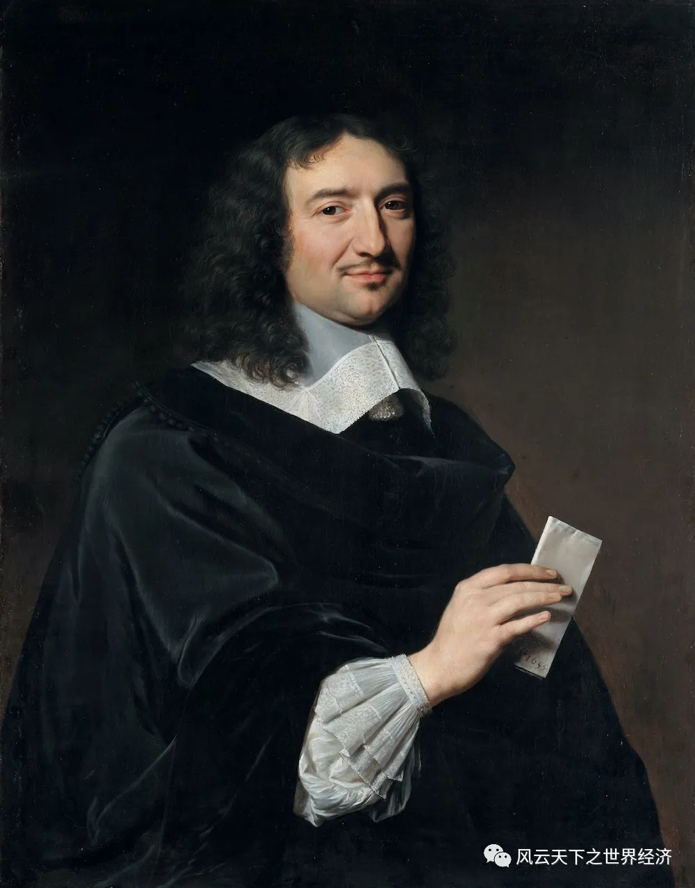
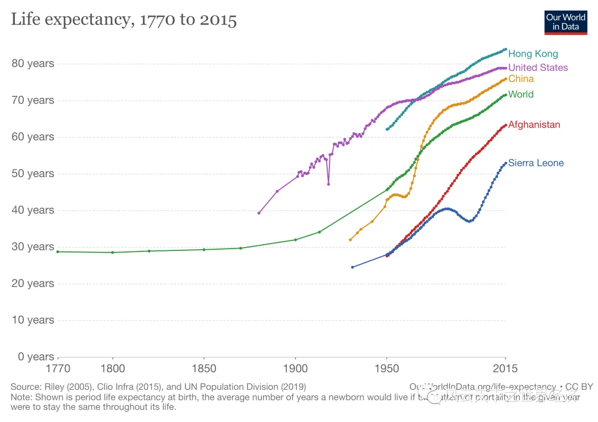
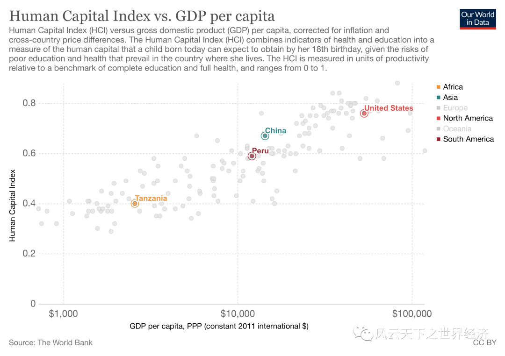
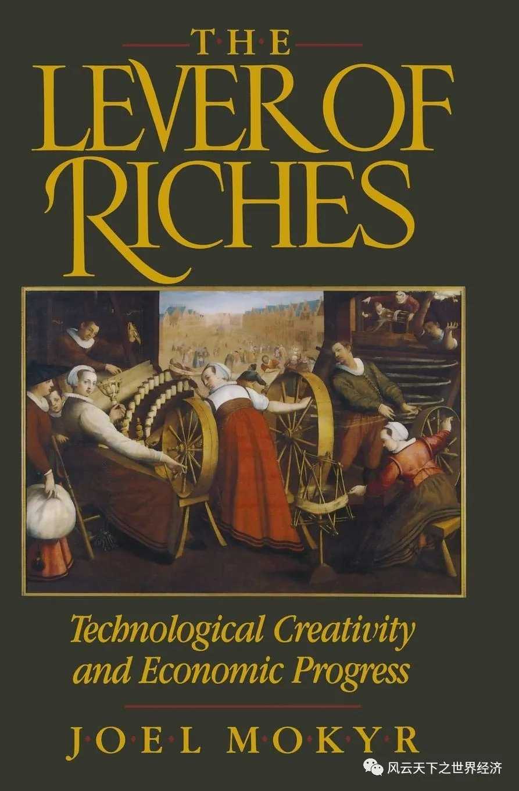
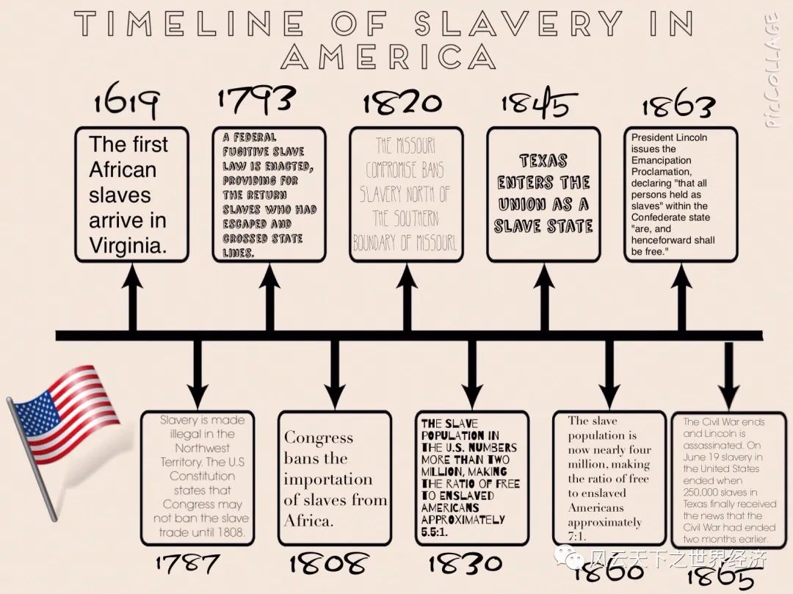

科学史告诉我们，人类在这个星球的出现是试错法的结果，是时空联接碰撞后产生的最大偶然。而世界经济这个宏大的主题，发端于人类出现的那一刻，它被人类的行为所塑造，又如洪流般裹挟众生流淌在时间的隧道里。
- 它足够漫长，长到 12000 年前的石器时代；
- 它又足够短，短到只是 150 亿年时间史的倏然一瞬；
- 它足够宽广，因为它生长在安纳托利亚的土丘上，也生长在死海边的耶利哥；它是尼罗河畔的斑驳壁画，也是马丘比丘的印加城堡；
- 它又足够狭小，因为这个星球有 5.1 亿平方公里，而经济丛林里最茂盛的一簇不过是欧亚大陆 5000 万平方公里的总和。
今天，呈现在你们面前的这门课程试图展现人类经济史的全貌。世界经济的历史是一根粗糙的藤蔓，我们探索之旅将从那些触手可及的节点开始。
第一个节点出现在距今 12000 年的新石器时代，从这一节点开始，人类告别狩猎和采集，开始进入生产和养殖，这是经济史上的第一次革命，把人类带入农业时代。自此开始，革命便如潮汐般层叠而来，将人类推向了一个又一个未知的明天。
在这个过程中，新的概念——经济、文化、政治、宗教、艺术、科技——接踵而至。
在我们的日常里，时间给人的印象总是不疾不徐，雪泥鸿爪无觅处；但是在经济史里，我们会频繁地使用革命这个词：价格革命、人口革命、商业革命······不一而足。革命一词所蕴含的瞬时性和暴烈性，让这些平淡无奇的词汇拥有了宏大苍茫的底色。
这一切都是因为经济史12000年的超长视域，赋予了我们一个无与伦比的上帝视角。
在这里，时空可以如胶泥般被随意扭曲弯折——戴克里先和柯尔贝尔可以随时相遇，来一场关于财政体系重构的大辩论；我们也可以不留一丝痕迹地抹去农业革命，畅想人类的田园牧歌是否还会在公元 2020 年嘶嘶回响。

戴克里先

柯尔贝尔
但是，在这个对人类至关重要的12000年里，变化这个主题贯穿始终。透过上帝之眼，通过让起点和终点相遇的方式，或许最能够展现经济变迁背后摄人心魄的力量。
当代人类与其祖先的一个显著反差是平均寿命的变化。根据联合国的最新人类发展报告，现代美国人平均可以活 78.7 年，而即使在罗马帝国的巅峰时期，这个数字也不过是 25 年。当然我们不否认世界上还有很多表现更差的国家，例如阿富汗的平均寿命只有 49.1、塞拉利昂是 48.1。但是即使在最穷的国家，这个数字也要大大超过古代——人们不止活的更长，而且活的更加健康。

1770年至2015年世界人口平均寿命
现代人有着更高的收入和消费水平。与祖先相比，他们对于商品和服务的消费组合更加丰富。即使我们只是将目光投射在跨国贸易高度发达的今天，这个星球上不同角落的人们的消费生活也迥然不同，由此也证明这个世界绝非像托马斯·弗里德曼所说的那样“平坦”。
大量的变化还体现在生活水平的提高和经济形态的日新月异上，而这种变化背后的故事则更加耐人寻味。洞悉经济发展背后的神秘力量是经济学家们的终极使命，即使他们中的很多人已然忘记了这一点。
如果可以按照艺术的标准进行归类，经济学家们一定是抽象派。早在古典时代，财富的创造的过程就被抽象为生产函数，这种从input到output的思考逻辑完美地刻画了所有生产活动的共性。从谷物到移动电话，从运动鞋到飞行器，所有物品都是按照这样一个过程被制造出来，并构成了财富的因子。如果说财富是输出端的话，那么财富的秘密一定隐藏在输入端，经济学家将其称为生产要素。最先被纳入的要素是土地（T)、劳动力(L)和资本(K)，这三个字母就是经济学所讲述的财富故事的最初版本，它所泛起的简约之美让无数人醉心其中。
1800 年，法国人让·巴蒂斯特将“企业家精神”作为第四要素引入生产函数。1921 年，芝加哥学派创始人奈特进一步解析了它的内涵，四大要素终于在新古典的世界里各司其职、和谐共生。
故事到此还未终结。假如以上四种要素不是独立存在而是可以相互合成的话，世界将会怎样呢？这样的思考促使人力资本如同“第五元素”般神奇降临。人力资本以人的形态存在，但在财富创造的过程中却发挥着资本的作用。它意指内化于人本身的知识、能力，这些因素让人变得更加 productive，而拥有更多人力资本的国家则能够生产出更多更好的产品和服务。
因此，国家之间的财富较量进化到了人力资本存量比拼的更高段位。在人类文明史上，我们经常看到的是人力资本存量和社会财富总量的齐头并进。二者互为因果，书写着大国崛起的神话。

人力资本存量对比
另一方面，社会财富又进一步影响了人的寿命和生活水平。在经济史上，人力资本存量经历了惊人的变化。在公元前 400 年的古雅典，大约 10%的人具有读写能力；而在其他地区，这个数字低得可怜：埃及和巴比伦王国大约只有 1%。2020 年，全球 15 岁以上成人识字率的平均值为 86%，，其中美国和西欧成人识字率更是接近 100%，这是一个足以傲视古希腊罗马的水平。在当代，仅仅是识文断字并不能进入人力资本的范畴，但尽管如此，当今塞拉利昂的成人识字率却只有 43%，生活在非洲荒漠草原的马里人也只有 33%的人具备读写能力，布基纳法索、尼日尔和南苏丹的识字率更是低至 30%。
当然，仅仅有这些要素还远远不够。在经济学家和上帝的眼里，生产是制造财富的唯一手段，是将各种生产要素组合在一起的炼金术。经济史学家乔尔·莫基尔称之为“财富的杠杆”（the Lever of Riches）。在过去一万两千年里，经济领域另外一个显著的变化体现在技术方面。如果把公元前 3000 年的埃及木犁和一台 MakerBot3D 打印机摆在一起，你可以在瞬间感受到技术的飞跃。但是，经济学不会采用这种方式刻画技术变迁，因为它无法量化并跨领域比较。经济学家更习惯使用生产率概念，即一般用单位投入所带来的产出来量化技术。

《财富的杠杆》
在边际革命之前由劳动价值论占统治地位的时代，最简单的衡量指标是劳动生产率。19 世纪边际革命之后，这个概念被颠覆并拓展。衡量指标固定在边际产出这个概念上，当然对应这个概念的还有很多外延性指标，目前最常用的是全要素生产率。
让我们先来回顾一下技术在过去一万年里走过的历程。在采集和狩猎的时代，人们只拥有最原始的生存技术（生产几乎还谈不上），这个时代也被称为新石器时代（Neolithic），这个单词是由希腊字母中的“new”和“stone”来组成的，顾名思义称为新石器，因为人们主要使用磨制石器。在这个漫长的时代里，人们还不掌握任何金属工具，因此食物采集者也就没有犁和车轮。在历史学界，人们对史前人类的断代倾向于使用“青铜时代”和“黑铁时代”来界定，这也跟生产技术有着密切联系。技术在距今 1000 年以前，几乎没有太大的变化，但是在 AD1500 前后，技术的更新开始加快，尤其是 18 世纪末期第一次工业革命的到来，促使技术的发展驶入快车道。此后人类又经历了四轮技术的飞跃，我们今天的生活就是这四轮技术革命所塑造的。
技术之所以重要，是因为它改写人类长久以来所依赖的生存模式——不是靠要素的积累和投入的增加，而是依赖单位要素产出的提高，来增加最终财富。技术成为经济增长的主角之后，经济发展的模式也彻底地被改变了。但是，正如人力资本一样，技术革新在这个地球的分布也不是平滑和均匀的。大约在公元前 4 世纪的美索不达米亚平原和中欧等地区，人们率先采用车轮用于交通运输，这是运输技术的一次伟大革命。这种技术很快向西欧、地中海和中国传播，但其“福音”并没有到达南撒哈拉地区，那里的人们直到 19 世纪才开始使用车轮技术。今天，不同的国家的技术水平存在着天壤之别，以全要素生产率来衡量，坦桑尼亚和秘鲁的技术仅仅是美国的 9%和 39%，这种技术的差异又无可避免地影响了国家的收入水平。
劳动力是最基本的生产要素之一，而劳动力又是以人口为基数的。人口统计学家估计，在新石器时代，这个地球上大约有 100 万人，而 1 万年后的今天，这个数字已经超过了 70 亿。同样还是那一片土地，但是它养育的人口规模已经发生了天文级的暴涨，这个已经有 近50 亿岁的星体还有多少潜力？
以上我们看到的——人口、工具、商品，在经济学上都是所谓要素或产出（stuff），而将它们连接起来的是生产和社会的组织方式。在经典的经济学模型里，前者对应的是变量，而后者则是刻画变量关系的函数，决定着输入和输出之间的奇妙关系。那么，这个函数该是线性的还是非线性的，是实变的还是复变的，经济学家们颇费思量，几近自残，以至于忘记了这些函数的现实涵义到底是什么。但是计量史学（Cliometrics）们却对这个问题孜孜以求，他们以古希腊历史女神Clio之名展开了经济学的自我革命，并认为社会制度才是这个命题的正解。
在过去的一万年里，社会的组织方式也发生了翻天覆地的变化。虽然我们不能确知新石器时代社会生产的方式——谁拥有土地和工具、如何决策播种和收割活动等等，但是我们能够知道在古代希腊和埃及的生产活动主要是由奴隶完成的，因此奴隶群体的规模也是非常惊人的，例如罗马人中的35%和雅典人中的 25%是奴隶。
奴隶几乎是毫无人权的，其角色与无生命的生产工具相似，他们无一例外都是别人的财产。在人类早期的很长一段时间里，奴隶是社会生产的基本组织形态。在英王威廉一世(征服者)下令编纂的《末日审判书》（The Doomesday Book）中记载，在 1086 年仍然有大约 10%的人口是奴隶。直到 1400 年，奴隶终于在英格兰绝迹，但是在世界的其他地域，奴隶制仍然存在。例如，1680 年在巴巴多斯的加勒比岛有 2/3 的人口是奴隶；1860 年的美国，13%的人口是奴隶。甚至到了 19 世纪，西非人口中 50%是奴隶。塞拉利昂的奴隶制直到 1928 年才由英国殖民者废止。
20 世纪中期之后，奴隶制作为一种制度终于在地球上消失了，但是我们不否认仍然有一些人过着奴隶般的生活。在经济史上，奴隶往往与低生产率联系在一起。恰如经济史学大师龙多·卡梅伦所言：一个以奴隶为基础的社会可能创造出艺术和文学杰作，但不可能创造出持续的经济增长。

美洲奴隶制度演变
奴隶制是一种典型的经济组织形式，也是早期农耕文明的显著标签之一。当然，在人类的历史上，还有很多经济组织模式。福利经济学第一定理告诉我们，竞争的市场结构一定对应着一个帕累托最优。用通俗的话讲，竞争是有效配置资源一种重要手段，而竞争这种状态又是和规范的市场所对应的。
除了市场这种经济组织方式之外，货币也是市场交易催生的另外一种提高效率的制度安排，它的出现使得交易者告别了以物易物方式的种种不便，大大降低了交易成本。尽管市场和货币在经济学理论的神殿里居于中心的位置，但是在漫长的经济史里，他们的核心地位也不过是在最近 200 年才慢慢确立。人类在很长的一段时期里生活在匈牙利经济学家卡尔·波兰尼所谓的伦理经济中，直到中世纪末期才被新教教义所挑战并最终取代。
经济史上排斥市场和货币的例子比比皆是。1532 年之后，西班牙殖民者在到达位于现在秘鲁境内的古印加帝国时，他们并不是使用市场手段来获取那里的丰富资源，而是代之以暴力和掠夺为特征的米塔制度。时至今日，阡陌如织的米塔区划仍然深刻地影响着现代玻利维亚和秘鲁人。
对此，你可以认为是由于印加帝国还没有使用货币，所以不存在催生市场机制的条件。但是在 20 世纪的苏联时代，统治者利用行政指令运作整个经济，在战争时期曾经一度取消货币；柬埔寨的红色高棉政权在 1970 年代也曾经废除过货币。通过对比当时的经济状况我们可以发现，这些制度安排与其经济表现存在着高度的关联，而这门课程就试图洞悉二者之间的联系。
在过去的一万年里发生系统性变化的还远不止这些，尽管有些东西离人们的平均寿命和福利等概念要远一些。以国家（STATE）这种制度安排为例，牛津词典对国家一词的解释是“在一个集权政府下的有组织政治共同体”。今天生活在这个世界上的人，无论他们喜欢与否，他们都生活在某一个特定的国家里。一万年前，国家这种集权式的制度安排还不存在。人类学家 Robert Carneiro的研究表明在公元前 1000 年左右，地球上有 800000 个分散的政治共同体。但时至今日，这个数字已经降到 200 以下。现存于世的这些集权式政权安排，它们的具体组织方式都千差万别。德国历史学家马克思·韦伯曾经给国家下过这样一个定义——国家是指在特定疆界中对合法使用暴力的垄断。世界上的大部分国家，如中国、美国，都符合这个特征；但是也非尽然，这个定义显然对于目前的阿富汗、叙利亚、乌克兰等国家都不适用。
国家的规模有着极大的差异，我们可以用一国政府获取国民财富的比重来衡量它的大小。在公元 1 世纪罗马帝国的巅峰时刻，政府通过税收等手段占有国民财富的 10%，英国达到这个水平大约要到 1700 年。今天，大部分发达国家的政府占有国民财富的比重要达到 45%以上，而穷国政府在这方面表现要差很多。例如，哥伦比亚政府直到 1960 年代才达到 6%；时至今日，塞拉利昂政府获取大约 10%，接近 1700 年代英国的水平。
政府的差异除了体现在规模上之外，其政权的组织方式也非常不同，例如民主化程度。在过去的 1 万年里，人类的民主化程度在整体上有了很大提升。古典民主最早萌芽于古雅典，是公元前 479 年就任执政官的梭伦的天才发明。民主最初的特征是国家的重大事务由该国的成年男子投票决定，奉行少数服从多数的原则。尽管这个民主还有很大局限性，奴隶和妇女被排除在外；但是，它无疑是人类历史上的重大进步。今天，发达国家的民主化程度已经达到了非常高的水平，但是在大部分落后地区，民主化还有很长的路程要走。
除了以上事物以外，在过去的 1 万年来还有很多其他的变化。例如福利水平和对暴力的使用频率。尽管在 20 世纪发生了 2 次世界大战，造成了有史以来最大规模的伤亡，但是我们不能就此认为人类变得越来越暴力了。在回答这个问题时我们还要考虑到人口的基数。如果以战争伤亡人数占总人口的比重作为标准，人类的暴力化程度无疑大大降低了，由此带来的是福利水平的提高。而在食物采集和狩猎时代，暴力事件的频次和杀伤力要高得多。
伴随着以上变化，人力资本、技术和政治制度也发生了天翻地覆的变化。那么这些变化之间是否有着某种关联呢？对这一问题的回答非常有助于我们理解人类过去的 1 万年所走过的历程。
这门课程就是围绕这些话题展开设计的。我们利用经济学的基本分析工具，通过对历史事件的科学测度和审视，来理解过去 1 万年人类生活的变化。在接下来的学习中，下面的这些问题将会一直萦绕你的脑际。
- 是什么因素造成了这种变化？
- 为什么这些变化只发生在特定的历史阶段和特定的区域，而不是发生在彼时彼地？
- 它们为什么以这种方式发生，而不是以其他方式发生？
- 像工业革命这样重要的事情，人类为什么要等待 1 万年？
- 大分流主宰了过去的 1000 年，它还会继续吗？
- 它是不可避免的吗？如果可能，它如何避免？
- 增长是否可以一直持续，它的极限在哪里？
- 如果你了解了经济史的苍凉底色，那么当代人还可以在技术革新的道路上疾驰多久？